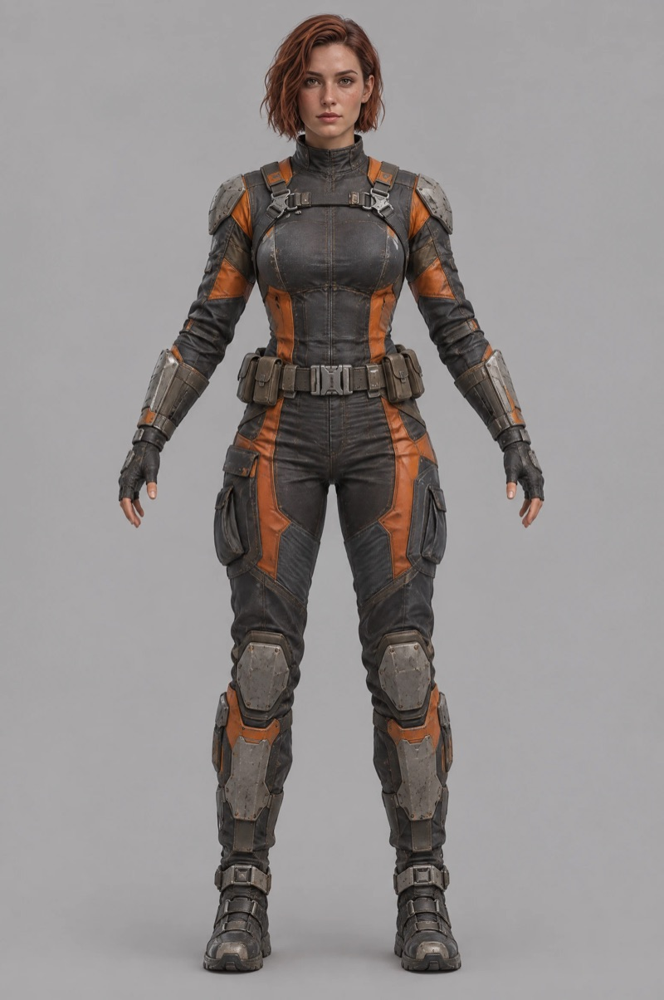
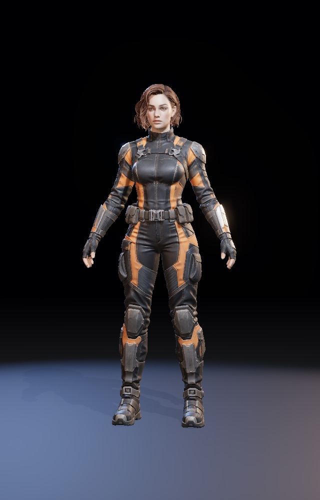
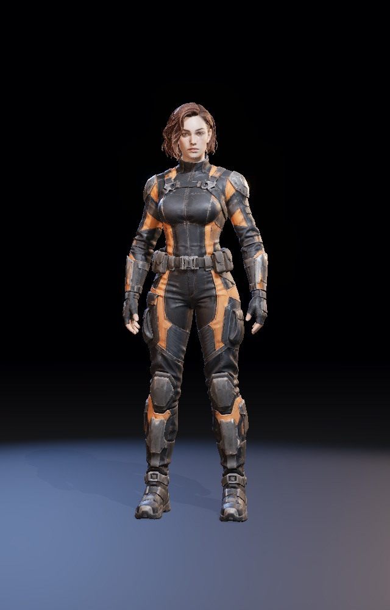
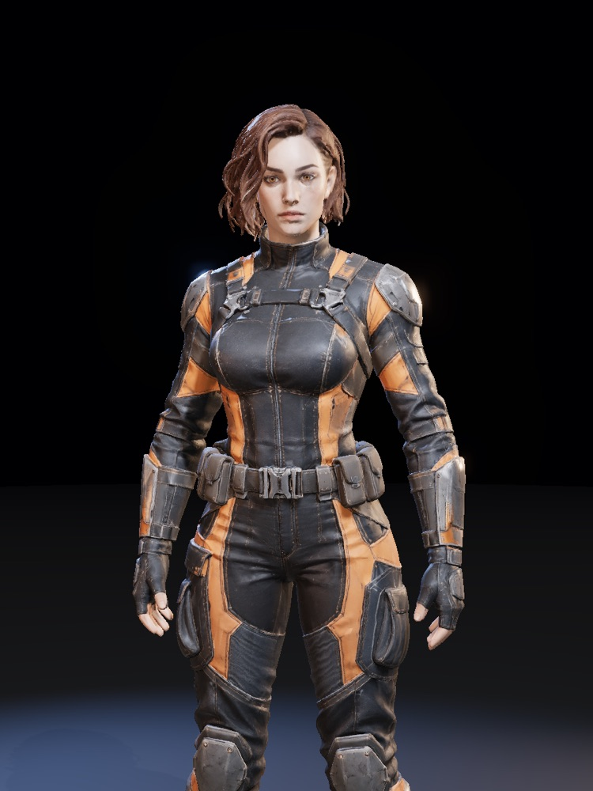
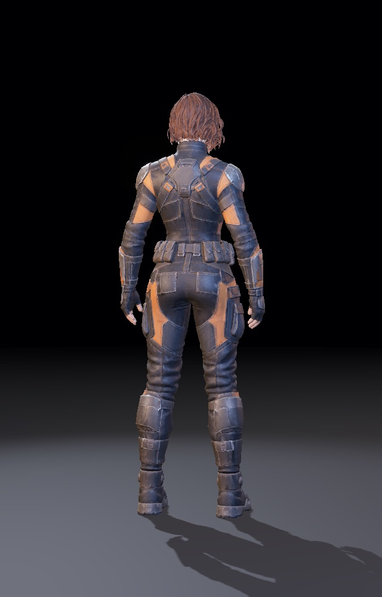
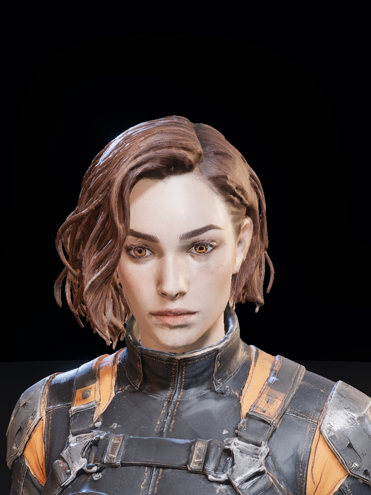

$game-dev-character-model · demo
One concept image in, a rigged heroine standing in a lit hangar out.
An original sci-fi heroine made with this skill: a photoreal A-pose concept, image-to-3D, an auto rig, a relaxed pose set in code, and hangar lighting. Every picture here is a headless capture of the real three.js viewer.
Concept to posed model
Left: the generated concept the model was built from. Right: drag across to compare the raw A-pose straight out of image-to-3D with the rigged, relaxed pose.

Concept

A-posePosedThe four check views
The views the skill captures before showing a character: full body, waist up, back and face.



How it was made
The steps in the skill, in order.
- Design an original characterSilhouette, palette and kit written down before any image.
- Photoreal A-pose conceptOne full-body image, neutral grey, arms out, nothing cropped.
- Image to 3DMeshy 7.1 at 4k through Fil: about 310k triangles, textured, in five minutes.
- RigMeshy rig: 24 Mixamo-style bones and a mesh cut to about 150k triangles.
- Pose in codeArms aimed down with a soft elbow, small chest and head turn.
- Light and captureCool key, warm fill, cold rims; four views captured headless.
310kTriangles, textured
150kTriangles, rigged
4Check views